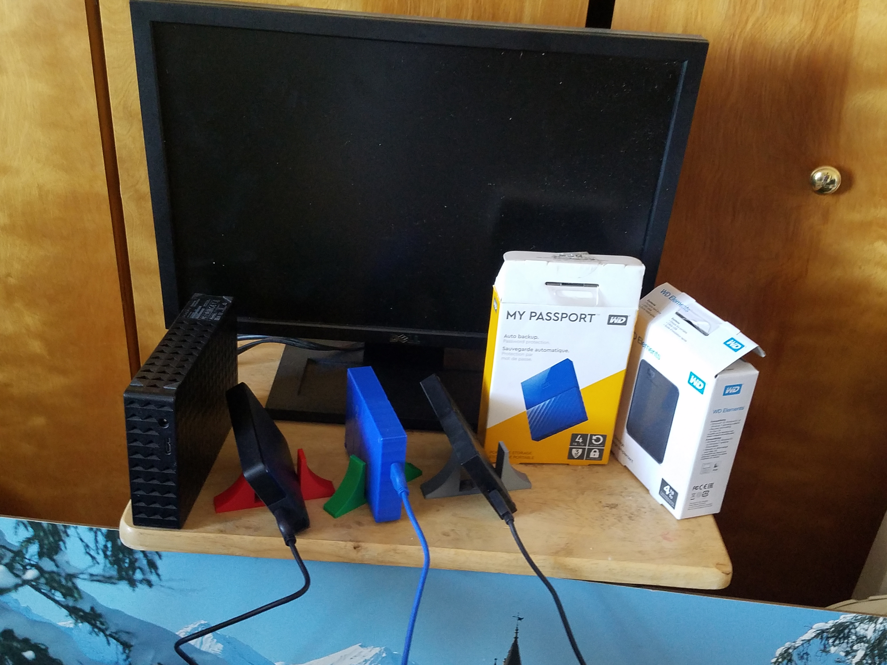
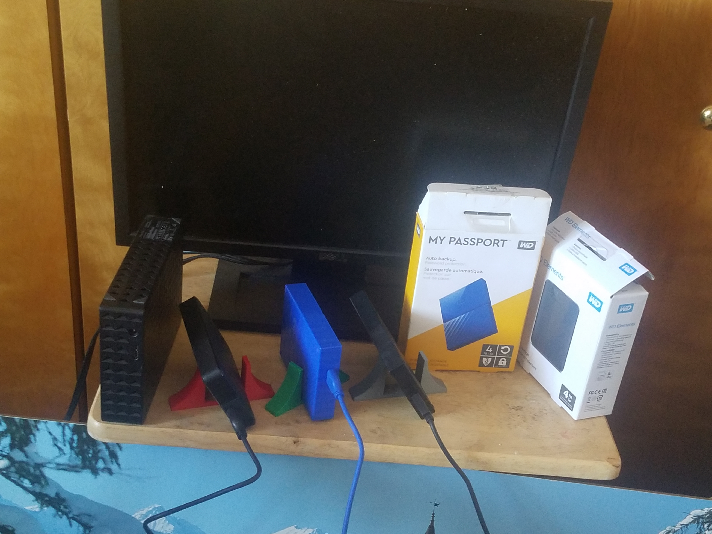
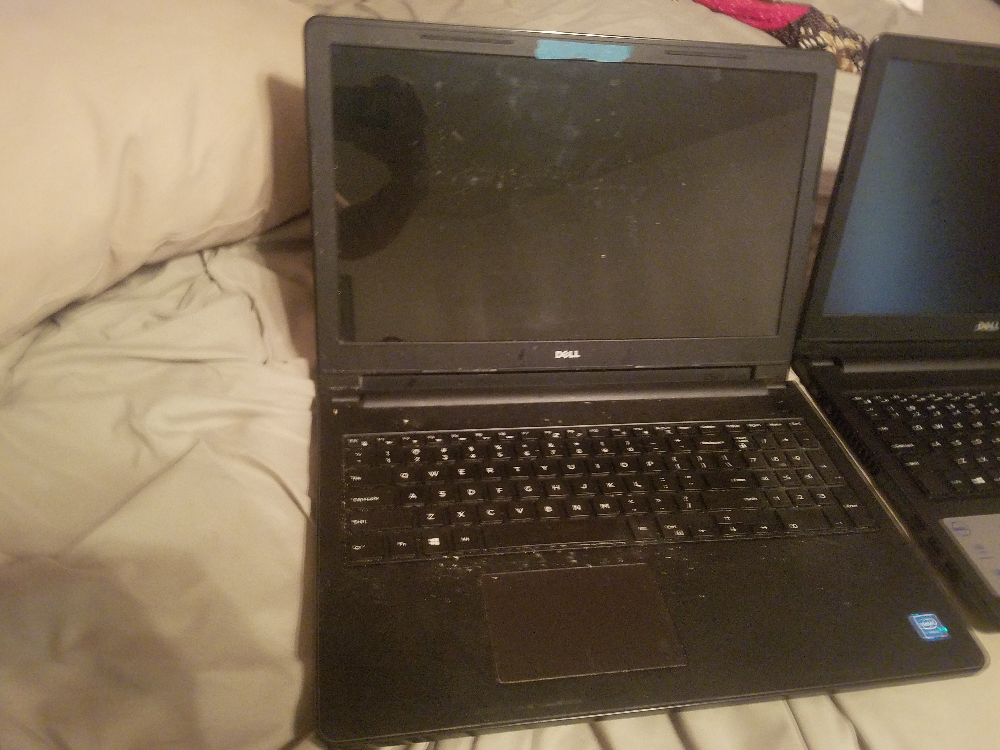
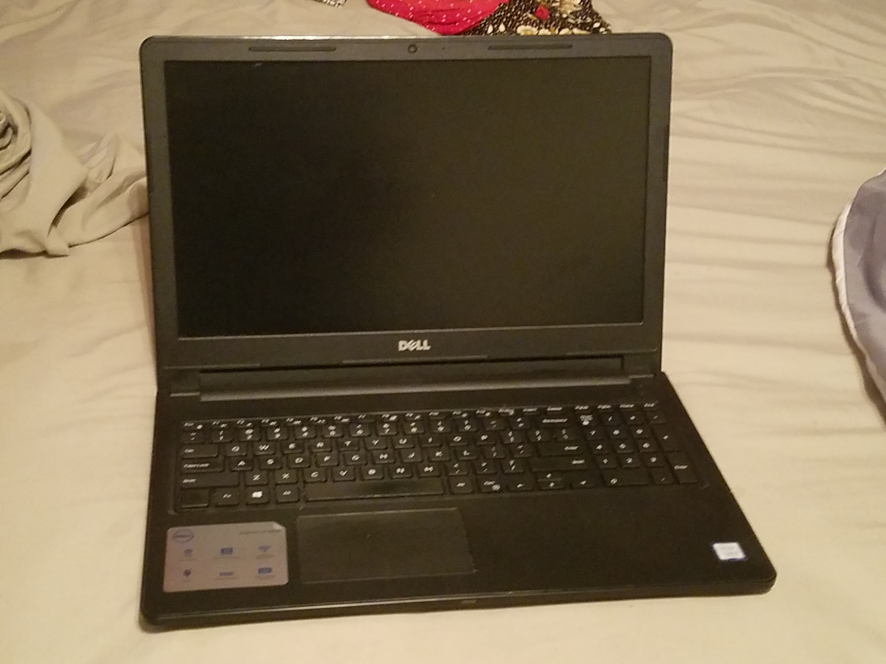
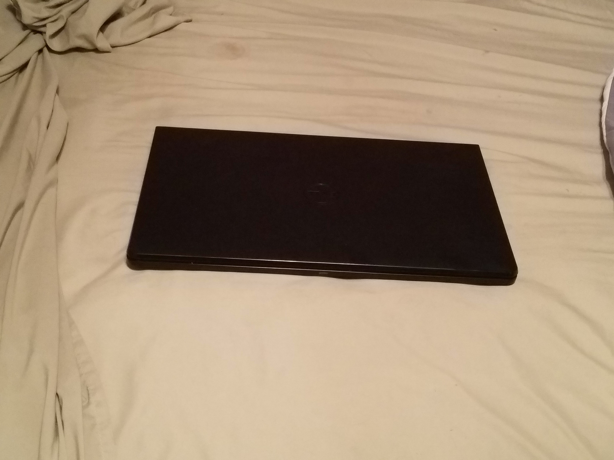
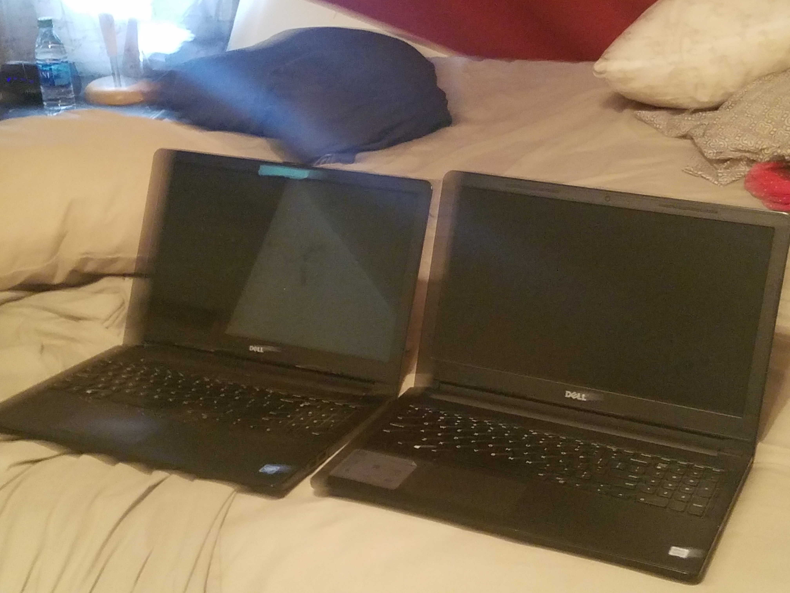

SNU Server 1.0

This is the current SNU server. I am not using it for SNU yet. It will not be the upload server. It is very small compared to what I need, 9 terabytes are working, 8 terabytes are out (the big black box on the left is a broken seagate hard drive)
I really like Western Digital and SanDisk for things like external hard drives (WD) and SD cards (SanDisk)
However, SNU is developed only on a laptop at the moment using Mozilla Firefox 63.0-68.0.1, notepad++ 7.5.9, on Windows 10 (unfortunately, I will soon move to Linux on my next laptop, as I can't rewrite the laptop yet)
The server is offline right now. The laptop is a Dell Inspiron 15 3000, with 8 Gigabytes of RAM, 1000 Gigabytes of memory, 730p60 display, with over 100 Gigabytes dedicated to SNU development. It is just a start.
The original laptop I used for the beginning of SNU development was a Dell ######### with 4 Gigabytes of RAM, 500 Gigabytes of memory, 730p30 display, with about 20 Gigabytes dedicated to SNU development.
I am really wanting to upgrade my server, but server upgrades are expensive. To not repeat the incidents of the Seagate drive, I have to be very careful when getting new hard drives. I have to make sure it has good reviews, by at least 1000 people, and has good specs.
Don't worry, nothing was lost on the Seagate drive, it was just downloads, which I have soon gotten back.
Today, I went and reshot the images and improved this page. Originally, I called this the hard drive sapling, as one day, I hope to improve, and get a much bigger server.
Gallery
Here is a gallery of images of this server
GreatlyImprovedServer1_9TB.jpg (DOWNLOAD / VIEW)
The current highest quality image of the hard drive sapling

Server1_9TB.jpg (DOWNLOAD / VIEW)
The original picture of the hard drive sapling, all 3 drives together. No longer featured due to unneeded background, and a static background

ImprovedServer1_9TB.jpg (DOWNLOAD / VIEW)
This is an improved picture of the hard drive sapling, with the background game removed, however the image is still static, so another reshoot was made

Server1_FirstOperator.jpg (DOWNLOAD / VIEW)
This is a picture of the original laptop that SNU 3.00, 3.0.1, 3.0.2, 3.0.3, and partially 3.0.4 was developed on. Mind the dirtiness, it hasn't been used in several months

Server1_SecondOperator.jpg (DOWNLOAD / VIEW)
This is a picture of the current laptop SNU is being developed on. Partially SNU 3.0.4 was developed here, and SNU 3.0.5, and SNU 3.0.6 was also developed on this machine

Server1_SecondOperator_Closed.jpg (DOWNLOAD / VIEW)
This is just a picture of a closed laptop.

Server1PT2_1.5TB.jpg (DOWNLOAD / VIEW)
This is a picture of both of the beginning SNU 3 operators (left) LEFT operator 1 (right) operator 2 RIGHT
I was meaning to get some pictures of the devices running SNU, but I forgot. I will try to do that tomorrow.
View older versions of this page
Snapshots 1 to 10
{kind=link}
{kind=link}
{kind=link}
{kind=link}
{kind=link}
{kind=link}